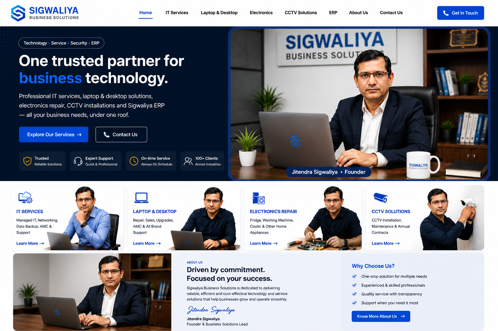

One trusted partner for business technology.
Professional IT services, laptop & desktop solutions, electronics repair, CCTV installations and Sigwaliya ERP — all your business technology needs under one roof.

Technology solutions for real business needs.
Dedicated service pages for every major requirement.

IT Services
Managed IT, networking, troubleshooting, preventive maintenance and AMC support.
Learn More →
Laptop & Desktop
Repair, sales, upgrades, used systems, setup and performance improvement.
Learn More →
Electronics Repair
Fridge, washing machine, cooler and selected home or office appliance service.
Learn More →
CCTV Solutions
Camera planning, installation, DVR/NVR configuration, mobile viewing and AMC.
Learn More →Driven by commitment. Focused on your success.
Sigwaliya Business Solutions brings IT support, computer services, electronics repair, CCTV solutions and business software together under one practical technology brand.
Jitendra Sigwaliya
Founder & Business Solutions Lead
One point of contact for multiple technology needs.
Need repair, installation, ERP or complete IT support?
Tell us your requirement and we will guide you to the right service.